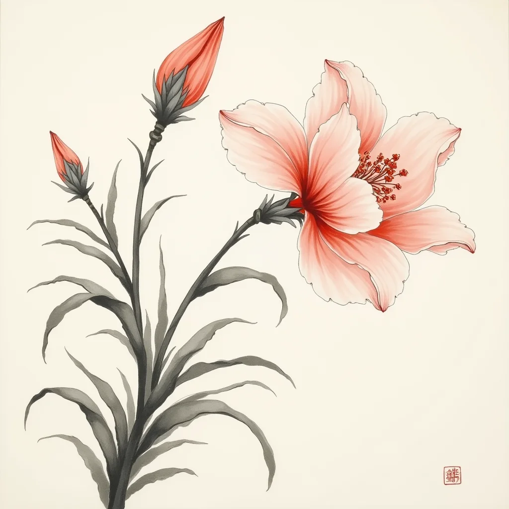
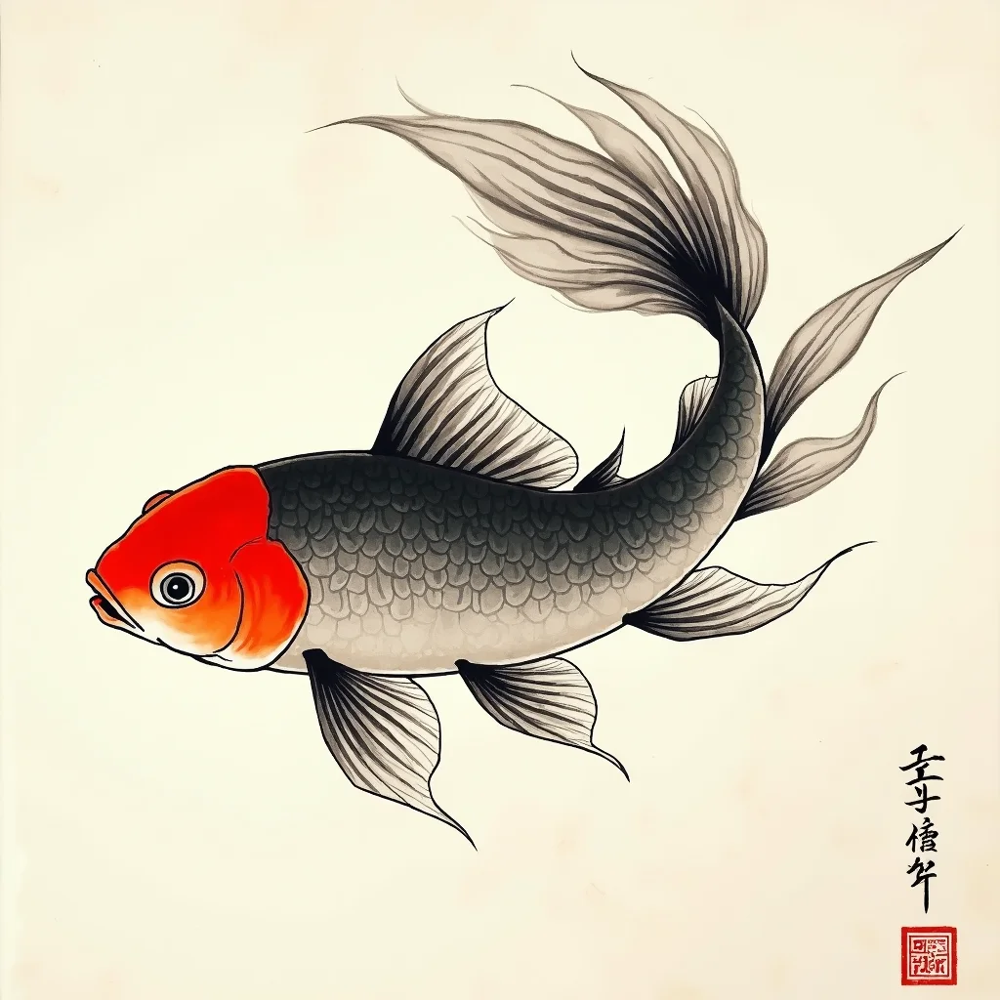
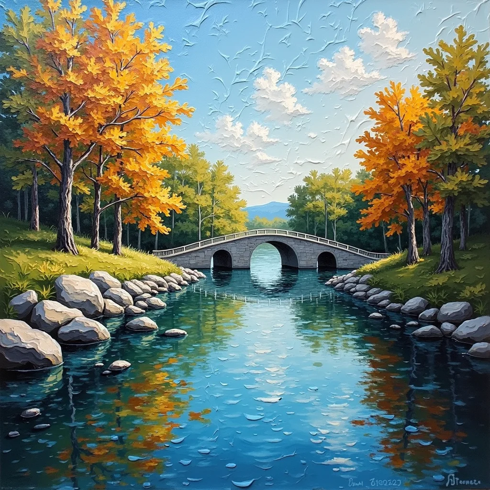
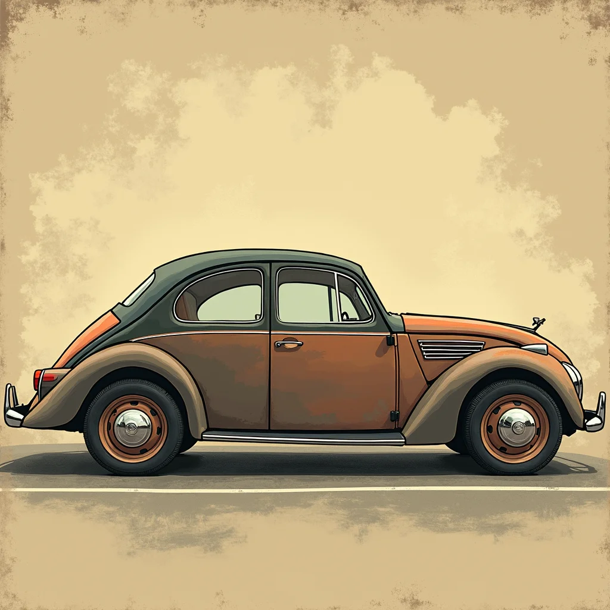
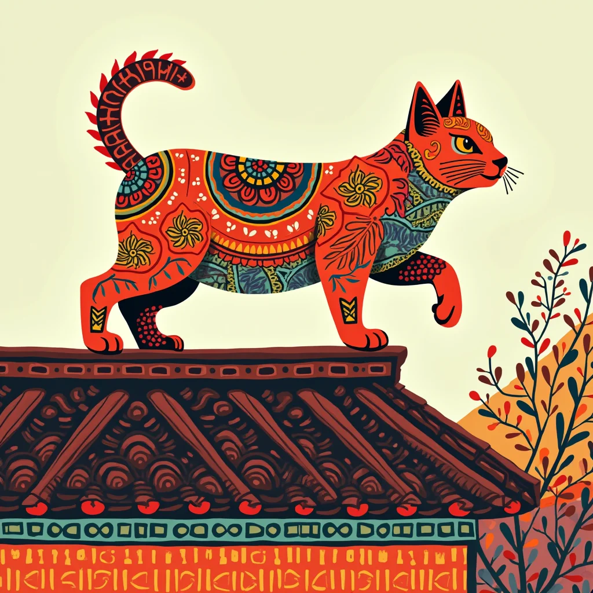
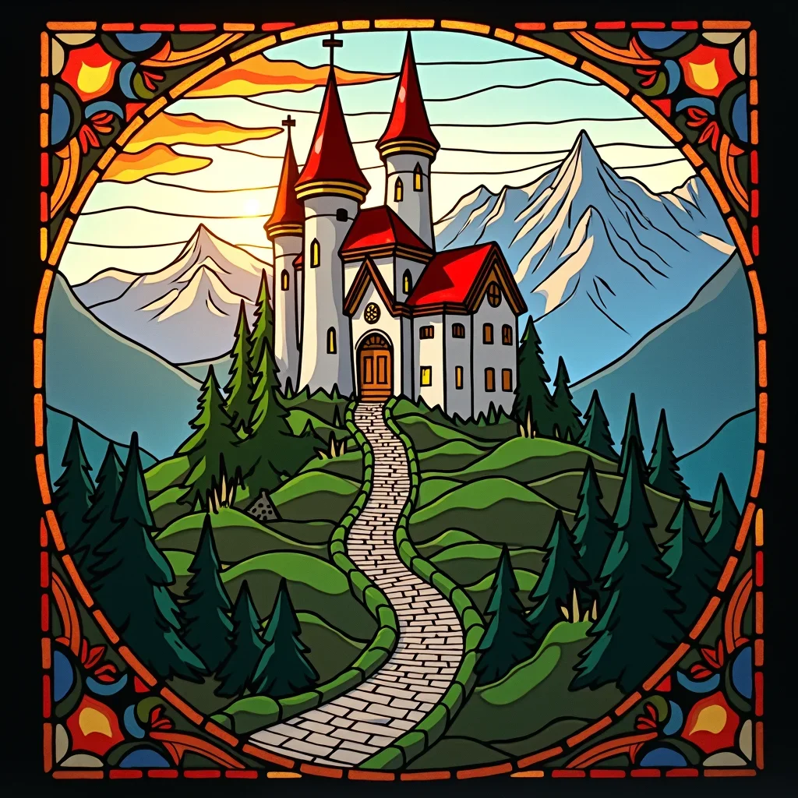

ImagePrompt.org
Home
Inspiration
Tutorials
Tools
Image to Prompt
Convert your image to an image prompt
AI Describe Image
Let AI help you describe and understand any image
Image Prompt Generator
Create detailed image prompt from simple text
AI Image Generator
Transform your image prompt into stunning visuals with AI-powered generation
Pricing
Home
Inspiration
Traditional & Cultural
Chinese Ink Painting
Art Detail

Image Prompt
a flower, a painting of Chinese Ink Painting
GENERATE
COPY
Traditional & Cultural
Chinese Ink Painting
Model
FLUX1_DEV
Image size
1024x1024
Explore More of Chinese Ink Painting

SEE ALL
Other Traditional & Cultural

Oil Painting

Vintage

Ethnic Art

Stained Glass Artwork
Paper Quilling Artwork
EXPLORE MORE